<!doctype html>
<html lang="en">
    <head>
        <meta charset="utf-8">
        <meta http-equiv="X-UA-Compatible" content="IE=edge">
        <meta name="viewport" content="initial-scale=1,user-scalable=no,maximum-scale=1,width=device-width">
        <meta name="mobile-web-app-capable" content="yes">
        <meta name="apple-mobile-web-app-capable" content="yes">
        <link rel="stylesheet" href="css/leaflet.css">
        <link rel="stylesheet" href="css/L.Control.Layers.Tree.css">
        <link rel="stylesheet" href="css/qgis2web.css">
        <link rel="stylesheet" href="css/fontawesome-all.min.css">
        <link rel="stylesheet" href="css/leaflet-search.css">
        <link rel="stylesheet" href="css/leaflet-control-geocoder.Geocoder.css">
        <link rel="stylesheet" href="css/leaflet-measure.css">
        <link rel="stylesheet" href="css/custom.css"> 
        <link href="https://fonts.googleapis.com/css2?family=Open+Sans:wght@400;600&display=swap" rel="stylesheet">
        <title>Mapa de Villarrica</title>
    </head>
    <body>
        <div id="map"></div>
        
        <div id="legend-panel">
            </div>

        <script src="js/qgis2web_expressions.js"></script>
        <script src="js/leaflet.js"></script>
        <script src="js/L.Control.Layers.Tree.min.js"></script>
        <script src="js/leaflet.rotatedMarker.js"></script>
        <script src="js/leaflet.pattern.js"></script>
        <script src="js/leaflet-hash.js"></script>
        <script src="js/Autolinker.min.js"></script>
        <script src="js/rbush.min.js"></script>
        <script src="js/labelgun.min.js"></script>
        <script src="js/labels.js"></script>
        <script src="js/leaflet-control-geocoder.Geocoder.js"></script>
        <script src="js/leaflet-measure.js"></script>
        <script src="js/leaflet-search.js"></script>
        <script src="data/LIMITEVILLARRICA_2.js"></script>
        <script src="data/VIALIDAD_3.js"></script>
        <script src="data/PUENTES_4.js"></script>
        <script>
        var map = L.map('map', {
            zoomControl:false, maxZoom:28, minZoom:1
        }).fitBounds([[-39.559243452320025,-72.71542968750003],[-38.987720912143644,-71.60296365489138]]);
        var hash = new L.Hash(map);
        
        // Move attribution to bottom right
        map.attributionControl.setPrefix('<a href="https://github.com/tomchadwin/qgis2web" target="_blank">qgis2web</a> &middot; <a href="https://leafletjs.com" title="A JS library for interactive maps">Leaflet</a> &middot; <a href="https://qgis.org">QGIS</a>');
        map.attributionControl.setPosition('bottomright');

        var autolinker = new Autolinker({truncate: {length: 30, location: 'smart'}});
        
        // Helper function to remove empty rows from popup content
        function removeEmptyRowsFromPopupContent(content, feature) {
           var tempDiv = document.createElement('div');
           tempDiv.innerHTML = content;
           var rows = tempDiv.querySelectorAll('tr');
           for (var i = 0; i < rows.length; i++) {
               var td = rows[i].querySelector('td.visible-with-data');
               var key = td ? td.id : '';
               if (td && td.classList.contains('visible-with-data') && feature.properties[key] == null) {
                   rows[i].parentNode.removeChild(rows[i]);
               }
           }
           return tempDiv.innerHTML;
        }

		// Helper function to add class to popup if it contains media
		function addClassToPopupIfMedia(content, popup) {
			var tempDiv = document.createElement('div');
			tempDiv.innerHTML = content;
			if (tempDiv.querySelector('td img')) {
				popup._contentNode.classList.add('media');
					// Delay to force the redraw
					setTimeout(function() {
						popup.update();
					}, 10);
			} else {
				popup._contentNode.classList.remove('media');
			}
		}
        
        // Map controls (positioned relative to the map itself)
        var zoomControl = L.control.zoom({
            position: 'topleft'
        }).addTo(map);
        
        var measureControl = new L.Control.Measure({
            position: 'topleft',
            primaryLengthUnit: 'meters',
            secondaryLengthUnit: 'kilometers',
            primaryAreaUnit: 'sqmeters',
            secondaryAreaUnit: 'hectares'
        });
        measureControl.addTo(map);
        document.getElementsByClassName('leaflet-control-measure-toggle')[0].innerHTML = '';
        document.getElementsByClassName('leaflet-control-measure-toggle')[0].className += ' fas fa-ruler';
        
        var osmGeocoder = new L.Control.Geocoder({
            collapsed: true,
            position: 'topright',
            text: 'Buscar',
            title: 'Buscar un lugar'
        }).addTo(map);
        document.getElementsByClassName('leaflet-control-geocoder-icon')[0]
        .className += ' fa fa-search';
        document.getElementsByClassName('leaflet-control-geocoder-icon')[0]
        .title = 'Buscar un lugar';

        var searchControl = new L.Control.Search({
            layer: null, // We'll set this after layers are defined
            initial: false,
            hideMarkerOnCollapse: true,
            propertyName: 'NOMBRE',
            position: 'topright',
            textPlaceholder: 'Buscar puente por nombre...',
            marker: new L.Marker([0,0], {
                icon: L.icon({
                    iconUrl: 'markers/search_marker.png',
                    iconSize: [32, 32]
                })
            })
        });
        map.addControl(searchControl);
        document.getElementsByClassName('search-button')[0].className += ' fa fa-binoculars';

        var bounds_group = new L.featureGroup([]);
        function setBounds() {
        }
        
        // --- Base Map Layers Definition ---
        map.createPane('pane_OpenStreetMap_0');
        map.getPane('pane_OpenStreetMap_0').style.zIndex = 400;
        var layer_OpenStreetMap_0 = L.tileLayer('https://tile.openstreetmap.org/{z}/{x}/{y}.png', {
            pane: 'pane_OpenStreetMap_0',
            opacity: 1.0,
            attribution: '&copy; <a href="https://www.openstreetmap.org/copyright">OpenStreetMap</a> contributors',
            minZoom: 1,
            maxZoom: 28,
            minNativeZoom: 0,
            maxNativeZoom: 19
        });
        // We won't add it to the map here; the layer control will manage it.
        
        map.createPane('pane_EsriSatellite_1');
        map.getPane('pane_EsriSatellite_1').style.zIndex = 401;
        var layer_EsriSatellite_1 = L.tileLayer('https://server.arcgisonline.com/ArcGIS/rest/services/World_Imagery/MapServer/tile/{z}/{y}/{x}', {
            pane: 'pane_EsriSatellite_1',
            opacity: 1.0,
            attribution: 'Tiles &copy; Esri &mdash; Source: Esri, i-cubed, USDA, USGS, AEX, GeoEye, Getmapping, Aerogrid, IGN, IGP, UPR-EGP, and the GIS User Community',
            minZoom: 1,
            maxZoom: 28,
            minNativeZoom: 0,
            maxNativeZoom: 17
        });
        layer_EsriSatellite_1.addTo(map); // This will be the default base layer when the map loads.

        // --- Data Layers (Overlay Layers) Definition ---

        function pop_LIMITEVILLARRICA_2(feature, layer) {
             var popupContent = '<table>\
                        <tr>\
                            <td colspan="2"><span class="popup-label">Object ID:</span> ' + (feature.properties['objectid'] !== null ? autolinker.link(feature.properties['objectid'].toLocaleString()) : '') + '</td>\
                        </tr>\
                        <tr>\
                            <td colspan="2"><span class="popup-label">Shape Length:</span> ' + (feature.properties['shape_leng'] !== null ? autolinker.link(feature.properties['shape_leng'].toLocaleString()) : '') + '</td>\
                        </tr>\
                        <tr>\
                            <td colspan="2"><span class="popup-label">Distrito Electoral:</span> ' + (feature.properties['dis_elec'] !== null ? autolinker.link(feature.properties['dis_elec'].toLocaleString()) : '') + '</td>\
                        </tr>\
                        <tr>\
                            <td colspan="2"><span class="popup-label">Circunscripción Senatorial:</span> ' + (feature.properties['cir_sena'] !== null ? autolinker.link(feature.properties['cir_sena'].toLocaleString()) : '') + '</td>\
                        </tr>\
                        <tr>\
                            <td colspan="2"><span class="popup-label">Código Comuna:</span> ' + (feature.properties['cod_comuna'] !== null ? autolinker.link(feature.properties['cod_comuna'].toLocaleString()) : '') + '</td>\
                        </tr>\
                        <tr>\
                            <td colspan="2"><span class="popup-label">Código Región:</span> ' + (feature.properties['codregion'] !== null ? autolinker.link(feature.properties['codregion'].toLocaleString()) : '') + '</td>\
                        </tr>\
                        <tr>\
                            <td colspan="2"><span class="popup-label">Área (sqm):</span> ' + (feature.properties['st_area_sh'] !== null ? autolinker.link(feature.properties['st_area_sh'].toLocaleString()) : '') + '</td>\
                        </tr>\
                        <tr>\
                            <td colspan="2"><span class="popup-label">Longitud (m):</span> ' + (feature.properties['st_length_'] !== null ? autolinker.link(feature.properties['st_length_'].toLocaleString()) : '') + '</td>\
                        </tr>\
                        <tr>\
                            <td colspan="2"><span class="popup-label">Región:</span> ' + (feature.properties['Region'] !== null ? autolinker.link(feature.properties['Region'].toLocaleString()) : '') + '</td>\
                        </tr>\
                        <tr>\
                            <td colspan="2"><span class="popup-label">Comuna:</span> ' + (feature.properties['Comuna'] !== null ? autolinker.link(feature.properties['Comuna'].toLocaleString()) : '') + '</td>\
                        </tr>\
                        <tr>\
                            <td colspan="2"><span class="popup-label">Provincia:</span> ' + (feature.properties['Provincia'] !== null ? autolinker.link(feature.properties['Provincia'].toLocaleString()) : '') + '</td>\
                        </tr>\
                    </table>';
            var content = removeEmptyRowsFromPopupContent(popupContent, feature);
            layer.on('popupopen', function(e) {
                addClassToPopupIfMedia(content, e.popup);
            });
            layer.bindPopup(content, { maxHeight: 400 });
        }

        function style_LIMITEVILLARRICA_2_0() {
            return {
                pane: 'pane_LIMITEVILLARRICA_2',
                opacity: 1,
                color: 'rgba(255,1,9,1.0)',
                dashArray: '',
                lineCap: 'butt',
                lineJoin: 'miter',
                weight: 3.0,
                fill: true,
                fillOpacity: 0.1,
                fillColor: 'rgba(255,1,9,0.1)',
                interactive: true,
            }
        }
        map.createPane('pane_LIMITEVILLARRICA_2');
        map.getPane('pane_LIMITEVILLARRICA_2').style.zIndex = 402;
        map.getPane('pane_LIMITEVILLARRICA_2').style['mix-blend-mode'] = 'normal';
        var layer_LIMITEVILLARRICA_2 = new L.geoJson(json_LIMITEVILLARRICA_2, {
            attribution: '',
            interactive: true,
            dataVar: 'json_LIMITEVILLARRICA_2',
            layerName: 'layer_LIMITEVILLARRICA_2',
            pane: 'pane_LIMITEVILLARRICA_2',
            onEachFeature: pop_LIMITEVILLARRICA_2,
            style: style_LIMITEVILLARRICA_2_0,
        });
        bounds_group.addLayer(layer_LIMITEVILLARRICA_2);
        map.addLayer(layer_LIMITEVILLARRICA_2); // Add to map to be visible by default

        function pop_VIALIDAD_3(feature, layer) {
            var popupContent = '<table>\
                        <tr>\
                            <th scope="row">NOMBRE VÍA</th>\
                            <td>' + (feature.properties['NOMBRE VIA'] !== null ? autolinker.link(feature.properties['NOMBRE VIA'].toLocaleString()) : '') + '</td>\
                        </tr>\
                        <tr>\
                            <th scope="row">CLASE</th>\
                            <td>' + (feature.properties['CLASE'] !== null ? autolinker.link(feature.properties['CLASE'].toLocaleString()) : '') + '</td>\
                        </tr>\
                    </table>';
            var content = removeEmptyRowsFromPopupContent(popupContent, feature);
            layer.on('popupopen', function(e) {
                addClassToPopupIfMedia(content, e.popup);
            });
            layer.bindPopup(content, { maxHeight: 400 });
        }

        function style_VIALIDAD_3_0() {
            return {
                pane: 'pane_VIALIDAD_3',
                opacity: 1,
                color: 'rgba(255,200,0,1.0)',
                dashArray: '',
                lineCap: 'round',
                lineJoin: 'round',
                weight: 2.5,
                fillOpacity: 0,
                interactive: true,
            }
        }
        map.createPane('pane_VIALIDAD_3');
        map.getPane('pane_VIALIDAD_3').style.zIndex = 403;
        map.getPane('pane_VIALIDAD_3').style['mix-blend-mode'] = 'normal';
        var layer_VIALIDAD_3 = new L.geoJson(json_VIALIDAD_3, {
            attribution: '',
            interactive: true,
            dataVar: 'json_VIALIDAD_3',
            layerName: 'layer_VIALIDAD_3',
            pane: 'pane_VIALIDAD_3',
            onEachFeature: pop_VIALIDAD_3,
            style: style_VIALIDAD_3_0,
        });
        bounds_group.addLayer(layer_VIALIDAD_3);
        map.addLayer(layer_VIALIDAD_3); // Add to map to be visible by default

        function pop_PUENTES_4(feature, layer) {
            var popupContent = '<table>\
                        <tr>\
                            <th scope="row">NOMBRE</th>\
                            <td>' + (feature.properties['NOMBRE'] !== null ? autolinker.link(feature.properties['NOMBRE'].toLocaleString()) : '') + '</td>\
                        </tr>\
                        <tr>\
                            <th scope="row">ROL</th>\
                            <td>' + (feature.properties['ROL'] !== null ? autolinker.link(feature.properties['ROL'].toLocaleString()) : '') + '</td>\
                        </tr>\
                        <tr>\
                            <th scope="row">CAMINO</th>\
                            <td>' + (feature.properties['CAMINO'] !== null ? autolinker.link(feature.properties['CAMINO'].toLocaleString()) : '') + '</td>\
                        </tr>\
                        <tr>\
                            <th scope="row">CAUCE</th>\
                            <td>' + (feature.properties['CAUCE'] !== null ? autolinker.link(feature.properties['CAUCE'].toLocaleString()) : '') + '</td>\
                        </tr>\
                    </table>';
            var content = removeEmptyRowsFromPopupContent(popupContent, feature);
            layer.on('popupopen', function(e) {
                addClassToPopupIfMedia(content, e.popup);
            });
            layer.bindPopup(content, { maxHeight: 400 });
        }

        function style_PUENTES_4_0() {
            return {
                pane: 'pane_PUENTES_4',
                rotationAngle: 0.0,
                rotationOrigin: 'center center',
                icon: L.icon({
                    iconUrl: 'markers/PUENTES_4.svg',
                    iconSize: [30, 30]
                }),
                interactive: true,
            }
        }
        map.createPane('pane_PUENTES_4');
        map.getPane('pane_PUENTES_4').style.zIndex = 404;
        map.getPane('pane_PUENTES_4').style['mix-blend-mode'] = 'normal';
        var layer_PUENTES_4 = new L.geoJson(json_PUENTES_4, {
            attribution: '',
            interactive: true,
            dataVar: 'json_PUENTES_4',
            layerName: 'layer_PUENTES_4',
            pane: 'pane_PUENTES_4',
            onEachFeature: pop_PUENTES_4,
            pointToLayer: function (feature, latlng) {
                var context = {
                    feature: feature,
                    variables: {}
                };
                return L.marker(latlng, style_PUENTES_4_0(feature));
            },
        });
        bounds_group.addLayer(layer_PUENTES_4);
        map.addLayer(layer_PUENTES_4); // Add to map to be visible by default

        // Update the search control layer after all layers are defined
        searchControl.setLayer(layer_PUENTES_4);

        // --- Layer Control (Legend) Configuration ---
        var baseMaps = {
             "OpenStreetMap": layer_OpenStreetMap_0,
             "Esri Satellite": layer_EsriSatellite_1
        };
        var overlaysTree = [
            {label: ' PUENTES', layer: layer_PUENTES_4},
            {label: ' VIALIDAD', layer: layer_VIALIDAD_3},
            {label: ' LÍMITE VILLARRICA', layer: layer_LIMITEVILLARRICA_2},
        ];
        
        // IMPORTANT: Add the layer control to the map temporarily, then move its content
        var lay = L.control.layers.tree(baseMaps, overlaysTree, {
            collapsed: false, // Legend will be open by default
        }).addTo(map); 
        
        // Move the generated content to the new div
        document.getElementById('legend-panel').appendChild(lay.getContainer());
        // Remove the control from the map (where it was added "invisibly")
        map.removeControl(lay);

        setBounds();
        </script>
    </body>
</html>
